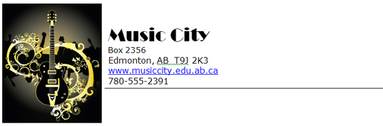
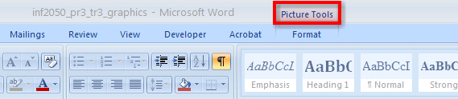
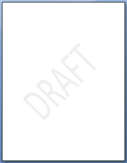

You don’t need to be a graphic artist to design good-looking letterheads — you have all the tools you need right in Microsoft Word. Let’s learn how to use text boxes, graphics, watermarks, and backgrounds to create professional-looking stationery. You will also learn how you can save your stationery as a template so you can reuse your creations again and again to save time and money.

© svetlin rusev/shutterstock
Go to the Instructional Videos and watch “Creating a Letterhead” to learn how to create a custom letterhead you and your boss will be proud of.
It is important to explore all the features and options in the Tools menus that appear when you select text boxes, graphics, and illustrations. The Picture tools, Drawing tools, and Text Box tools allow you to modify and manipulate your objects until they are perfect for your document. Take some time to experiment after you go to the Instructional Videos and watch “Picture Tools, Text Tools, Formatting Tools on the Ribbon.” You’ll be surprised by how quickly you can customize your work.

Microsoft product screen shot(s) reprinted with permission from Microsoft Corporation.

Microsoft product screen shot(s) reprinted with permission from Microsoft Corporation.
Watermarks and backgrounds can add colour and dimension to your documents. A watermark is washed-out text or graphic elements that appear faintly behind a document’s text. Watermarks are used to enhance the look of a document, or to provide information about the document, such as that it is a “Draft Copy.” Go to the Instructional Videos and watch “Creating a Watermark” to learn how to add a watermark to your document. To see how a watermark will appear on the printed page, use the Print Layout view.
When you have created a custom document, you can save it as a template so that the document can be reused without having to recreate it or edit out unwanted content each time. Saving a document as a template creates a copy of that document, allowing you to edit the new copy without changing the original. Templates save time if you use a certain type of document frequently. In business, companies increase productivity by using templates to generate common business correspondence with their corporate letterhead, such as monthly billing statements.
Go to the Instructional Videos and watch “Word Template” and “Opening a Saved Template” to learn how to save your document as a template that you can reuse.